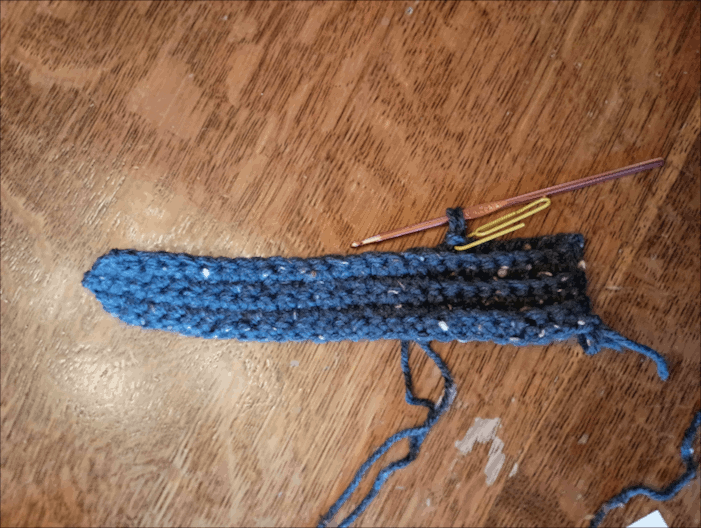

- Measure your (or whoever will wear the mittens; referred hereafter as the user) thumb and wrist down to the point you want the bottom of the cuff to end, using the sewing tape. Make your first row of stitches up to this length. For mine, I used 25 stitches. Then add one extra stitch to use as a turning chain.
- NOTE: This number may vary based on how tight your stitches are, how thick your yarn is, personal preference, etc., so don't worry if your number isn't the same as mine.
- Turn your work and single crochet (SC) all the way down. Make a turning chain at the end and turn your work again.
- For the third row and each row after, we will do a section of single crochet - back loop only (SCBLO) to make a ribbing texture for the cuff. Measure the user's wrist with the sewing tape or by holding your work up to the user's wrist, and decide how long to make your cuff. I chose 8 stitches for mine, so I will do 8 stitches of SCBLO, then SC the rest of the way back.
- NOTE:If desired, add a stitch marker (make definition bubble) on the last stitch of your ribbing to keep track of where it ends.
- At the end, we will do an increase. If you missed the tutorial on this, click here. After the increase, make a turning chain, turn, and do another increase at the beginning of row 4. At this point, you should have two more stitches than you did originally (not including turning chains).
- After the row 4 increase, SC down to the stitch marker, then SCBLO to the end of the row. Make a turning chain and SCBLO back up to the stitch marker, then SC to the top.
- At the top of row 5, make a decrease. If you missed this tutorial, click here. Make a turning chain, turn, make another decrease, and finish row 6 as done previously.
|

|